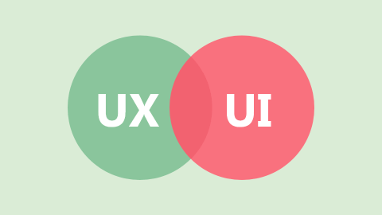

Welcome! I am a dynamic professional with a diverse skill set spanning agile methodologies, business analysis, and project management.
With a rich background in the finance, utility, retail, and consulting sectors. I bring a wealth of experience in navigating complex business landscapes. My expertise extends to UI/UX and data analysis, where I leverage BI tools, SQL, and Python to derive valuable insights by transforming numbers into stories. I am passionate about driving efficiency, innovation, and strategic decision-making, making me a versatile asset in today's dynamic business environment..

In this project, I analysed a workforce dataset used by HumanResources and answered business questions. I then visulaised this in PowerBI.

In this project a analysed a dataset download from IMDB platform. My aim was to look at the movie budgets and gross earnings, to determine what movies earned well above their orignal budget using correlation.

In this project, I create a dashboard in PowerBI that breakdown the details of Netflix TV shows and Movies by Category and Rating.

In this design, I created a simplistic and personalised mental health app to help students deal with cultural and social challenges of moving to a new country using user research findings , user experince criterias, empathy maps and storyboarding.